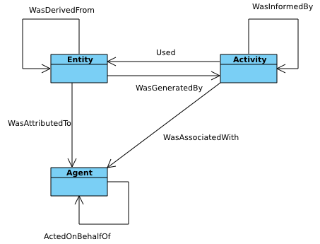
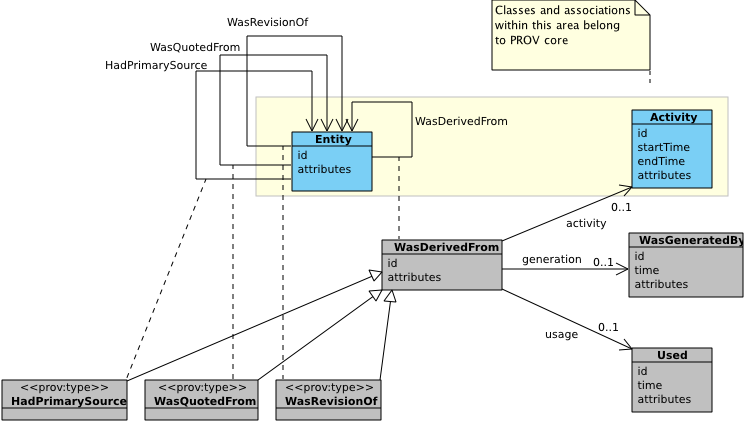
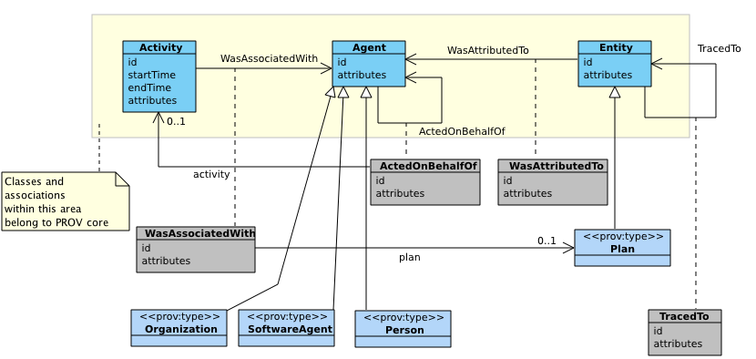
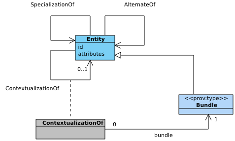
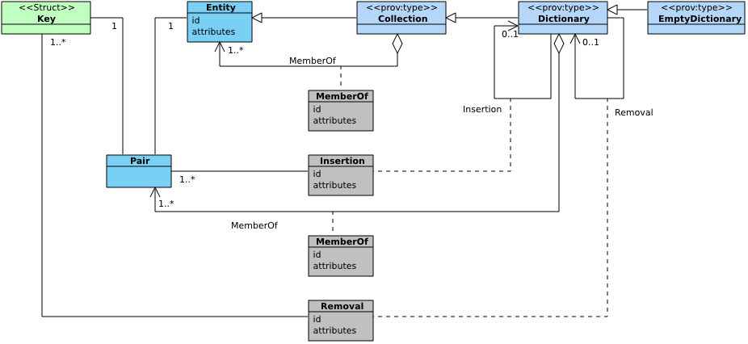

PROV-DM: The PROV Data Model
W3C Editor's Draft 14 June 2012
- This version:
- http://dvcs.w3.org/hg/prov/raw-file/default/model/prov-dm.html
- Latest published version:
- http://www.w3.org/TR/prov-dm/
- Latest editor's draft:
- http://dvcs.w3.org/hg/prov/raw-file/default/model/prov-dm.html
- Previous version:
- http://www.w3.org/TR/2012/WD-prov-dm-20120503/
- Editors:
- Luc Moreau, University of Southampton
- Paolo Missier, Newcastle University
- Authors:
- Khalid Belhajjame, University of Manchester
- Reza B'Far, Oracle Corporation
- Stephen Cresswell, legislation.gov.uk
- Tom De Nies, IBBT - Ghent University
- Yolanda Gil, Invited Expert
- Paul Groth, VU University of Amsterdam
- Graham Klyne, University of Oxford
- Tim Lebo, Rensselaer Polytechnic Institute
- Jim McCusker, Rensselaer Polytechnic Institute
- Simon Miles, Invited Expert
- James Myers, Rensselaer Polytechnic Institute
- Satya Sahoo, Case Western Reserve University
- Curt Tilmes, National Aeronautics and Space Administration
Copyright © 2011-2012 W3C® (MIT, ERCIM, Keio), All Rights Reserved. W3C liability, trademark and document use rules apply.
Abstract
Provenance is information about entities, activities, and people,
involved in producing a piece of data or thing, which can be used
to form assessments about its quality, reliability or trustworthiness.
PROV-DM is the conceptual data model that forms a basis for the W3C
provenance (PROV) family of specifications.
PROV-DM distinguishes core structures, forming the essence of provenance information, from
extended structures catering for more specific uses of provenance.
PROV-DM is organized in six components, respectively dealing with:
(1) entities and activities, and the time at which they were created, used, or ended;
(2) agents bearing responsibility for entities that were generated and activities that happened;
(3) derivations of entities from entities;
(4) properties to link entities that refer to the same thing;
(5) a notion of bundle, a mechanism to support provenance of provenance; and,
(6) collections forming a logical structure for its members.
This document introduces the provenance concepts found in
PROV and defines PROV-DM types and
relations. PROV data model is domain-agnostic, but is equipped with
extensibility points allowing domain-specific information to be included.
Two further documents complete the specification of PROV-DM.
First, a companion document specifies the set of constraints that
provenance should follow. Second,
a separate document describes a provenance notation for expressing
instances of provenance for human consumption; this notation is used in examples in
this document.
Status of This Document
This section describes the status of this document at the time of its publication. Other documents may supersede this document. A list of current W3C publications and the latest revision of this technical report can be found in the W3C technical reports index at http://www.w3.org/TR/.
Intended to be Last Call (TBC)
This is the fifth public release of the PROV-DM document.
Publication as Last Call working draft means that
the Working Group believes that it has satisfied the relevant technical requirements outlined in its charter on this document. The design is not expected to change significantly, going forward, and now is the key time for external review, before the implementation phase.
The PROV Working group seeks public feedback on this Working Draft.
The end date of the Last Call review period is TBD, and we would appreciate comments by that date to public-prov-comments@w3.org
PROV Family of Specifications
This document is part of the PROV family of specifications, a set of specifications defining various aspects that are necessary to achieve the vision of inter-operable
interchange of provenance information in heterogeneous environments such as the Web. The specifications are:
- PROV-DM, the PROV data model for provenance (this document);
- PROV-CONSTRAINTS, a set of constraints applying to the PROV data model;
- PROV-N, a notation for provenance aimed at human consumption;
- PROV-O, the PROV ontology, an OWL-RL ontology allowing the mapping of PROV to RDF;
- PROV-AQ, the mechanisms for accessing and querying provenance;
- PROV-PRIMER, a primer for the PROV data model;
- PROV-SEM, a formal semantics for the PROV data model;
- PROV-XML, an XML schema for the PROV data model.
How to read the PROV Family of Specifications
- The primer is the entry point to PROV offering an introduction to the provenance model.
- The Linked Data and Semantic Web community should focus on PROV-O defining PROV classes and properties specified in an OWL-RL ontology. For further details, PROV-DM and PROV-CONSTRAINTS specify the constraints applicable to the data model, and its interpretation. PROV-SEM provides a mathematical semantics.
- The XML community should focus on PROV-XML defining an XML schema for PROV. Further details can also be found in PROV-DM, PROV-CONSTRAINTS, and PROV-SEM.
- Developers seeking to retrieve or publish provenance should focus on PROV-AQ.
- Readers seeking to implement other PROV serializations
should focus on PROV-DM and PROV-CONSTRAINTS. PROV-O, PROV-N, PROV-XML offer examples of mapping to RDF, text, and XML, respectively.
This document was published by the Provenance Working Group as an Editor's Draft. If you wish to make comments regarding this document, please send them to public-prov-comments@w3.org (subscribe, archives). All feedback is welcome.
Publication as an Editor's Draft does not imply endorsement by the W3C Membership. This is a draft document and may be updated, replaced or obsoleted by other documents at any time. It is inappropriate to cite this document as other than work in progress.
This document was produced by a group operating under the 5 February 2004 W3C Patent Policy. W3C maintains a public list of any patent disclosures made in connection with the deliverables of the group; that page also includes instructions for disclosing a patent. An individual who has actual knowledge of a patent which the individual believes contains Essential Claim(s) must disclose the information in accordance with section 6 of the W3C Patent Policy.
1. Introduction
For the purpose of this specification, provenance ◊ is defined as a record that describes the people,
institutions, entities, and activities involved in producing,
influencing, or delivering a piece of data or a thing.
In particular, the provenance of information is crucial in deciding
whether information is to be trusted, how it should be integrated with
other diverse information sources, and how to give credit to its
originators when reusing it. In an open and inclusive environment
such as the Web, where users find information that is often contradictory or
questionable, provenance can help those users to make trust judgements.
We present the PROV data model,
a generic data model for provenance that allows domain and application specific representations of provenance to be translated into such a data model and interchanged between systems.
Thus, heterogeneous systems can export their native provenance into such a core data model, and applications that need to make sense of provenance can then import it,
process it, and reason over it.
The PROV data model distinguishes core structures from
extended structures: core structures form the essence of
provenance information, and are commonly found in various
domain-specific vocabularies that deal
with provenance or similar kinds of information [Mappings].
Extended structures enhance and refine core
structures with more expressive capabilities to cater for more
advanced uses of provenance.
The PROV data model, comprising both core and extended structures, is a domain-agnostic model, but with clear extensibility points allowing further domain-specific and
application-specific extensions to be defined.
The PROV data model has a modular design and is structured according to six components covering various facets of provenance:
- component 1: entities and activities, and the time at which they were created, used, or ended;
- component 2: agents bearing responsibility for entities that were generated and activities that happened;
- component 3: derivations of entities from others;
- component 4: properties to link entities that refer to a same thing;
- component 5: bundles, a mechanism to support provenance of provenance;
- component 6: collections forming a logical structure for its members.
This specification presents the concepts of the PROV Data Model, and
provenance types and relations, without specific concern for how they are applied.
With these, it becomes possible to write useful provenance, and publish or embed it alongside the data it relates to.
However, if something about which provenance is expressed is subject to change, then it is challenging to express its provenance precisely (e.g. the data from which a daily weather report is derived changes from day to day).
This is addressed in a companion
specification [PROV-CONSTRAINTS] by proposing formal constraints on
the way that provenance is related to the things it
describes (such as the use of attributes, temporal information and
specialization of entities), and additional conclusions that are valid
to infer.
1.1 Structure of this Document
Section 2 provides an overview of the PROV Data Model, distinguishing a core set of types and relations, commonly found in provenance, from extended structures catering for more specific uses. It also introduces a modular organization of the data model in components.
Section 3 overviews the Provenance Notation used to illustrate examples of provenance.
Section 4 illustrates how the PROV data model can be used
to express the provenance of a report published on the Web.
Section 5 provides the definitions of PROV concepts, structured according to six components.
Section 6 summarizes PROV-DM extensibility points.
Section 7 introduces the idea that constraints can be applied to the PROV data model to validate provenance; these are covered in the companion specification [PROV-CONSTRAINTS].
1.2 Notational Conventions
The key words "must", "must not", "required", "shall", "shall
not", "should", "should not", "recommended", "may", and
"optional" in this document are to be interpreted as described in
[RFC2119].
The following namespaces prefixes are used throughout this document.
Table 1: Prefix and Namespaces used in this specification
| prefix | namespace uri | definition |
| prov | http://www.w3.org/ns/prov# | The PROV namespace (see Section 5.7.4) |
| xsd | http://www.w3.org/2000/10/XMLSchema# | XML Schema Namespace [XMLSCHEMA11-2] |
| rdf | http://www.w3.org/1999/02/22-rdf-syntax-ns# | The RDF namespace [RDF-CONCEPTS] |
| (others) | (various) | All other namespace prefixes are used in examples only.
In particular, URIs starting with "http://example.com" represent
some application-dependent URI [URI] |
Examples throughout this document use the PROV-N Provenance
Notation, briefly introduced in Section 3 and specified fully in a separate document [PROV-N].
2. PROV Overview
This section introduces provenance concepts with informal explanations and illustrative
examples. PROV distinguishes core structures, forming the essence of provenance, from extended structures catering for more advanced uses of provenance. Core and extended structures are respectively presented in Section 2.1 and Section 2.2. Furthermore, the PROV data model is organized according to components, which form thematic groupings of concepts (see Section 2.3). A provenance description is an instance of a core and extended provenance structure described below.
2.1 PROV Core Structures
At its core, provenance describes the use and production of
entities by activities, which may be
influenced in
various ways by agents. These core types and their relationships
are illustrated
by
the UML diagram of Figure 1.

Figure 1: PROV Core Structures
The concepts found in the core of PROV are introduced in the rest of this section.
They are summarized in Table 2, where they are categorized as
type or relation.
The first column lists concepts, the second column indicates whether a concept maps to a type or a relation, whereas the third column contains the corresponding name. Names of relations have a verbal form in the past tense to express what happened in the past, as opposed to what may or will happen. In the core of PROV, all relations are binary.
2.1.1 Entity and Activity
In PROV, things we want to describe the provenance of are called entities and have some fixed aspect. The term "things" encompasses a broad diversity of notions, including digital objects such as a file or web page,
physical things such as a mountain, a building, a printed book, or a car as well as abstract concepts and ideas.
An entity is a physical, digital, conceptual, or other kind of thing with some fixed aspects; entities may be real or imaginary. [Detailed specification]
An activity is something that occurs over a period of time and acts upon or with entities; it may include consuming, processing, transforming, modifying, relocating, using, or generating entities. [Detailed specification]
Just as entities cover a broad range of notions,
activities can cover a broad range of
notions:
information processing activities
may for example move, copy, or duplicate digital entities;
physical activities can include
driving a car from Boston to Cambridge.
An activity may be the publishing of a document on the Web, sending a twitter message, extracting metadata embedded in a file, driving a car from Boston to Cambridge, assembling a data set based on a set of measurements, performing a statistical analysis over a data set, sorting news items according to some criteria, running a SPARQL query over a triple store, or editing a file.
Activities and entities are associated with each other in two different ways: activities utilize entities and activities produce entities. The act of utilizing or producing an entity may have a duration.
The term 'generation' refers to the completion of the act of producing; likewise, the term 'usage' refers to the beginning of the act of utilizing entities. Thus, we define the following concepts of generation and usage.
Generation is the completion of production of a new entity by an activity. This entity did not exist before generation and becomes available for usage after this generation. [Detailed specification]
Usage is the beginning of utilizing an entity by an activity. Before usage, the activity had not begun to utilize this entity and could not have been affected by the entity. [Detailed specification]
Examples of generation are the completed creation of a file by a
program, the completed creation of a linked data set, and the completed
publication of a new version of a document.
One might reasonably ask what entities are used and generated by
driving a car from Boston to Cambridge. This is answered by
considering that a single artifact may
correspond to several entities; in this case, a car in Boston may be a
different entity from a car in Cambridge.
Thus, among other things,
an entity "car in Boston" would be used, and a new entity "car in
Cambridge" would be generated by this activity of driving. The
provenance trace of the car might include: designed in Japan,
manufactured in Korea, shipped to Boston USA, purchased by customer,
driven to Cambridge, serviced by engineer in Cambridge, etc., all of
which might be important information when deciding whether or not it
represents a sensible second-hand purchase. Or some of it might
alternatively be relevant when trying to determine the truth of a web
page reporting a traffic violation involving that car. This breadth
of provenance allows descriptions of interactions between physical and
digital artifacts.
Usage examples include a procedure beginning to consume an argument, a service starting to read a value on a port, a program beginning to read a configuration
file, or the point at which an ingredient, such as eggs, is being added in a baking activity. Usage may entirely consume an entity (e.g. eggs are no longer available after being added to
the mix); in contrast, the same entity may be used multiple times, possibly by different activities (e.g. a file on a file system can be read indefinitely).
The generation of an entity by an activity and its subsequent usage by another activity is termed communication.
Communication is the exchange of an unspecified entity by two activities, one activity using some entity generated by the other. [Detailed specification]
The activity of writing a celebrity article was informed by (a
communication instance) the activity of intercepting voicemails.
2.1.2 Derivation
Activities utilize entities and produce entities. In some cases, utilizing an entity influences the creation of another in some way. This notion of 'influence' is captured by derivations, defined as follows.
A derivation is a transformation of an entity into another, an update of an entity resulting in a new one, or the construction of a new entity based on a pre-exisiting entity.
[Detailed specification]
Examples of derivation include the transformation of a relational table into a
linked data set, the transformation of a canvas into a painting, the transportation of a work of art from London to New York, and a physical transformation such as the melting of ice into water.
While the basic idea is simple, the concept of derivation can be quite
subtle: implicit is the notion that the generated entity was affected
in some way by the used entity.
If an artifact
was used by an activity that also generated a new artifact, it does not always follow
that the second artifact was derived from the first. In the activity
of creating a painting, an artist may have mixed some paint that was
never actually applied to the canvas: the painting would typically
not be considered a derivation from the unused paint.
PROV does not attempt to specify the conditions under which derivations
exist; rather, derivation is considered to have been determined by unspecified means.
Thus, while a chain of usage and generation is necessary for a
derivation to hold between entities, it is not sufficient; some
form of influence occurring during the activities involved is also needed.
2.1.3 Agents and Responsibility
For many purposes, a key consideration
for deciding whether something is reliable and/or trustworthy is
knowing who or what was reponsible for its production. Data published by
a respected independent organization may be considered more
trustworthy that that from a lobby organization; a claim by a
well-known scientist with an established track record may be more
believed than a claim by a new student; a calculation performed by an
established software library may be more reliable than by a one-off
program.
An agent is something that bears some form of responsibility for an activity taking place or for the existence of an entity. [Detailed specification]
An agent may be a particular type of entity or activity. This means that the model can be
used to express provenance of the agents themselves.
Software for checking the use of grammar in a document may be defined as an agent of a document preparation activity; one can also describe its provenance, including for instance the vendor and the version history.
A site selling books on the Web, the services involved in the processing of orders, and the companies hosting them are also agents.
Agents can be related to entities, activities, and other agents.
Attribution is the ascribing of an entity to an agent.
[Detailed specification]
A blog post can be attributed to an author, a mobile phone to its manufacturer.
Agents are defined as having some kind of responsibility for activities.
An activity association is an assignment of responsibility to an agent for an activity, indicating that the agent had a role in the activity.
[Detailed specification]
Examples of association between an activity and an agent are:
- creation of a web page under the guidance of a designer;
- various forms of participation in a panel discussion, including audience member, panelist, or panel chair;
- a public event, sponsored by a company, and hosted by a museum;
Delegation is the assignment of authority and responsibility to an agent (by itself or by another agent) to carry out a specific activity as a delegate or representative, while the agent it acts on behalf of retains some responsibility for the outcome of the delegated work.
[Detailed specification]
The nature of this relation is intended to be broad, including contractual relation, but also altruistic initiative by the representative agent.
A student publishing a web page describing an academic
department could result in both the student and the department being
agents associated with the activity. It may not matter which actual
student published a web page, but it may matter significantly that the department
told the student to put up the web page.
2.2 PROV Extended Structures
While the core of PROV focuses on essential provenance structures commonly found in provenance descriptions, extended structures
are designed to support more advanced uses of provenance.
The purpose of this section is twofold. First, mechanisms to specify these extended structures are introduced. Second, two further kinds of provenance structures are overviewed: they cater for provenance of provenance and collections, respectively.
2.2.1 Mechanisms to Define Extended Structures
Extended structures are defined by a variety of mechanisms
outlined in this section: subtyping, expanded relations, optional
identification, and new relations.
2.2.1.1 Subtyping
Subtyping can be applied to core types. For example, a software agent is special kind of agent, defined as follows.
A software agent is running software.
Subtyping can also be applied to core relations. For example, a revision is a special kind of derivation, defined as follows.
A revision is a derivation for which the resulting entity is a revised version of some original.
2.2.1.2 Expanded Relations
Section 2.1 shows that seven concepts are mapped to binary relations in the core of PROV. However, some advanced uses of these concepts cannot be captured by a binary relation, but require relations to be expanded to n-ary relations.
To illustrate expanded relations, we consider the concept of
association, described
in Section 2.1.3. Agents may adopt plans, i.e. sets of actions or steps, to achieve their
goals in the context of an activity.
Hence, an expanded form of
association relation allows for a plan to be specified. Plan is defined by subtyping and
full association by an expanded relation, as follows.
A plan is an entity that represents a set of actions or steps intended by one or more agents to achieve some goals.
An activity association is an assignment of responsibility to an agent for an activity, indicating that the agent had a role in the activity. It further allows for a plan to be specified, which is the plan intended by the agent to achieve some goals in the context of this activity.
There exist no
prescriptive requirement on the nature of plans, their representation, the
actions or steps they consist of, or their intended goals. Since plans may evolve over time,
it may become necessary to track their provenance, so plans themselves are
entities. Representing the plan explicitly in the provenance can be useful for various tasks: for example, to
validate the execution as represented in the provenance record, to
manage expectation failures, or to provide explanations.
An example of association between an activity and an agent involving a plan is:
an XSLT transform (an activity) launched by a user (an agent) based on an XSL style sheet (a plan).
2.2.1.3 Optional Identification
Some concepts exhibit both a core use, expressed as
binary relation, and an extended use, expressed as n-ary relation. In
some cases, mapping the concept to a relation, whether binary or
n-ary, is not sufficient: instead, it may be required to
identify an instance of such concept. In those cases, PROV-DM allows for
an optional identifier to be
expressed to identify an instance of an association between two or
more elements. This optional identifier can then be used to refer to
an instance as part of other concepts.
A service may read a same configuration file on two different occasions. Each usage can be identifed by its own identifier, allowing them to be distinguished.
2.2.1.4 Further Relations
Finally, PROV-DM supports further relations that are not subtypes or expanded versions of existing relations.
2.2.2 Provenance of Provenance
A bundle is a named set of provenance descriptions, and is itself an entity, so allowing provenance of provenance to be expressed.
For users to decide whether they can place their trust in
a resource, they may want to analyze the resource's provenance, but also determine
who its provenance is attributed to, and when it was
generated. In other words, users need to be able to determine the provenance of provenance.
Hence, provenance is also
regarded as an entity (of type Bundle), by which provenance of provenance can then be
expressed.
2.2.3 Collections
A collection is an entity that provides a structure to some constituents, which are themselves entities. These constituents are said to be member of the collections. Many different types of collections exist, such as a sets, dictionaries, or lists.
Using Collections, one can express the provenance of the collection itself in addition to that of the members. The provenance of the collection is the history of all insertions into and deletions from the collection. This may be complemented by explicit membership statements which enumerate the contents of the collection.
An example of collection is an archive of documents. Each document has its own provenance, but the archive itself also has some provenance: who maintained it, which documents it contained at which point in time, how it was assembled, etc.
2.3 Modular Organization
Besides the separation between core and extended structures, PROV-DM
is further organized according to components, grouping concepts in a
thematic manner.
Table 3 enumerates the six components, five of which have already been implicitly overviewed in this section. All components specify extended structures, whereas only the first three define core structures.
Table 3: Components Overview
| Component | Core
Structures | Overview | Specification | Description |
| | | | | |
| 1 | Entities and Activities | ✔ | 2.1.1 | 5.1 | about entities and activities, and their interrelations |
| 2 | Derivation | ✔ | 2.1.2 | 5.2 | about derivations and its subtypes |
| 3 | Agent and Responsibility | ✔ | 2.1.3 | 5.3 | about agents and concepts ascribing responsibility to them |
| 4 | Alternate | | — | 5.4 | about relations linking entities referring the same thing |
| 5 | Bundles | | 2.2.2 | 5.5 | about bundles, a mechanism to support provenance of provenance |
| 6 | Collections | | 2.2.3 | 5.6 | about collections and concepts capturing their transformation, such as insertion and removal |
3. The Provenance Notation
To illustrate the application of PROV concepts to a concrete example (see Section 4) and to provide examples of concepts (see Section 5),
we introduce PROV-N, a notation for writing instances of the PROV data model. For full details, the reader is referred to the companion specification [PROV-N].
PROV-N is a notation aimed at human consumption, with the following characteristics:
- PROV-N expressions adopt a functional notation consisting
of a name and a list of arguments in parentheses.
- The interpretation of PROV-N arguments is defined according to their position in the list of arguments. This convention allows for a compact notation.
-
PROV-N optional arguments need not be specified:
the general rule for optional arguments is that, if none of them are used in the expression, then they are simply omitted, resulting in a simpler expression. However, it may be the case that only some of the optional arguments need to be specified. Because the position of the arguments in the expression matters, in this case, an additional marker must be used to indicate that a particular term is not available. The syntactic marker '-' is used for this purpose.
- Most expressions
include an identifier
and a set of attribute-value pairs; both are optional unless otherwise specified. By convention, the identifier occurs in the first position, and the set of attribute-value pairs in the last position.
Consistent with the convention on arguments, the marker '-' can be used when the identifier is not available, or can be omitted altogether with no ambiguity arising. To further disambiguate expressions that contains an optional identifier, the optional identifier or marker must be followed by ';'.
An activity with identifier a1 and an attribute type with value createFile.
activity(a1, [prov:type="createFile"])
Two entities with identifiers
e1 and
e2.
entity(e1)
entity(e2)
The activity
a1 used
e1, and
e2 was generated by
a1.
used(a1,e1)
wasGeneratedBy(e2,a1)
The same descriptions, but with an explicit identifier
u1 for the usage, and the syntactic marker '
-' to mark the absence of identifier in the generation. Both are followed by '
;'.
used(u1;a1,e1)
wasGeneratedBy(-;e2,a1)
4. Illustration of PROV-DM by an Example
Section 2 has introduced some provenance concepts, and how they are expressed as types or relations in the PROV data model. The purpose of this section is to put these concepts into practice in order to express the provenance of some document published on the Web.
With this realistic example, PROV concepts are composed together, and a graphical illustration shows a provenance description forming a directed graph, rooted at the entity we want to explain the provenance of, and pointing to the entities, activities, and agents it depended on. This example also shows that, sometimes, multiple provenance descriptions about the same entity can co-exist, which then justifies the need for provenance of provenance.
In this example, we consider one of the many documents published by the World Wide Web Consortium, and describe its provenance.
Specifically, we consider the document identified by
http://www.w3.org/TR/2011/WD-prov-dm-20111215. Its provenance can be expressed from several perspectives: first, provenance can take the authors' viewpoint; second, it can be concerned with the W3C process. Then, attribution of these two provenance descriptions is provided.
4.1 The Authors View
Description: A document
is edited by some editor, using contributions from various
contributors.
In this perspective, provenance of the document
http://www.w3.org/TR/2011/WD-prov-dm-20111215 is concerned with the editing activity as perceived by authors. This kind of information could be used by authors in their CV or in a narrative about this document.
We paraphrase some PROV-DM descriptions, express them with the PROV-N notation, and depict them with a graphical illustration (see Figure 2).
Full details of the provenance record can be found here.
 Figure 2: Provenance of a Document (1)
Figure 2: Provenance of a Document (1)
- There was a document tr:WD-prov-dm-20111215, which from the author's perspective was a document in its second version.
entity(tr:WD-prov-dm-20111215, [ prov:type="document", ex:version="2" ])
- There was an editing activity.
activity(ex:edit1,[prov:type="edit"])
- The document was generated by the editing activity: this was a Generation.
wasGeneratedBy(tr:WD-prov-dm-20111215, ex:edit1, -)
- There were some agents.
agent(ex:Paolo, [ prov:type="Person" ])
agent(ex:Simon, [ prov:type="Person" ])
- Agents were assigned various responsibilities in the editing activity: contributor and editor.
wasAssociatedWith(ex:edit1, ex:Paolo, -, [ prov:role="editor" ])
wasAssociatedWith(ex:edit1, ex:Simon, -, [ prov:role="contributor" ])
Provenance descriptions can be illustrated graphically. The illustration is not intended to represent all the details of the model, but it is intended to show the essence of a set of
provenance descriptions. Therefore, it should not be seen as an alternate notation for expressing provenance.
The graphical illustration takes the form of a graph. Entities, activities and agents are represented as nodes, with oval, rectangular, and pentagonal shapes, respectively. Usage,
Generation, Derivation, and Association are represented as directed edges.
Entities are laid out according to the ordering of their generation. We endeavor to show time progressing from left to right. This means that edges for Usage, Generation,
Derivation, Association typically point leftwards
4.2 The Process View
Description: The World Wide Web
Consortium publishes documents according to its publication
policy. Working drafts are published regularly to reflect the work
accomplished by working groups. Every publication of a working draft
must be preceded by a "publication request" to the Webmaster. The
very first version of a document must also be preceded by a
"transition request" to be approved by the W3C director. All working
drafts are made available at a unique URI. In this scenario, we consider two successive versions of a given document, the policy according to which they were published, and the associated requests.
We describe the kind of provenance record that the WWW Consortium could keep for auditors to check that due processes are followed. All entities involved in this example are Web resources, with well-defined URIs (some of which refer archived email messages, available to W3C Members).
We now paraphrase some PROV descriptions, and express them with the PROV-N notation, and depict them with a graphical illustration (see Figure 3). Full details of the provenance record can be found here.
 Figure 3: Provenance of a Document (2)
Figure 3: Provenance of a Document (2)
- There was a document, a working draft (rec54:WD), which is an entity so that we can describe its provenance. Similar descriptions exist for all entities.
entity(tr:WD-prov-dm-20111215, [ prov:type='rec54:WD' ])
- There was a publication activity.
activity(ex:act2,[prov:type="publish"])
- The document was generated by the publication activity: this was a Generation.
wasGeneratedBy(tr:WD-prov-dm-20111215, ex:act2, -)
- The second draft of the document was derived from the first draft: this was a Derivation.
wasDerivedFrom(tr:WD-prov-dm-20111215, tr:WD-prov-dm-20111018)
- The activity required a publication request: this was a Usage.
used(ex:act2, email:2011Dec/0111, -)
- The activity was associated with the Consortium agent, and proceeded according to its publication policy: this is an Activity Association.
wasAssociatedWith(ex:act2, w3:Consortium, process:rec-advance)
This simple example has shown a variety of PROV concepts, such as Entity, Agent, Activity, Usage, Generation, Derivation, and Association. In this example, it happens that all entities were already Web resources, with readily available URIs, which we used. We note that some of the resources are public, whereas others have restricted access: provenance statements only make use of their identifiers. If identifiers do not pre-exist, e.g. for activities, then they can be generated, for instance ex:act2, occurring in the namespace identified by prefix ex. We note that the URI scheme developed by W3C is particularly suited for expressing provenance of these documents, since each URI denotes a specific version of a document. It then becomes easy to relate the various versions with PROV-DM relations. We note that an Association is a ternary relation (represented by a multi-edge labeled wasAssociatedWith) from an activity to an agent and a plan.
4.3 Attribution of Provenance
The two previous sections offer two different perspectives on the provenance of a document. PROV allows for multiple sources to provide the provenance of a subject. For users to decide whether they can place their trust in the document, they may want to analyze its provenance, but also determine who the provenance is attributed to, and when it was
generated, etc. In other words, we need to be able to express the provenance of provenance.
PROV-DM offers a construct to name a bundle of provenance descriptions (full details: ex:author-view).
bundle ex:author-view
agent(ex:Paolo, [ prov:type='prov:Person' ])
agent(ex:Simon, [ prov:type='prov:Person' ])
...
endBundle
Likewise, the process view can be expressed as a separate named bundle (full details:
ex:process-view).
bundle ex:process-view
agent(w3:Consortium, [ prov:type='prov:Organization' ])
...
endBundle
To express their respective provenance, these bundles must be seen as entities, and all PROV constructs are now available to express their provenance. In the example below, ex:author-view is attributed to the agent ex:Simon, whereas ex:process-view to w3:Consortium.
entity(ex:author-view, [prov:type='prov:Bundle' ])
wasAttributedTo(ex:author-view, ex:Simon)
entity(ex:process-view, [prov:type='prov:Bundle' ])
wasAttributedTo(ex:process-view, w3:Consortium)
5. PROV-DM Types and Relations
Provenance concepts, expressed as PROV-DM types and relations, are organized according to six components that are defined in this section.
The components and their dependencies are illustrated in Figure 4. A component that relies on concepts defined in another is displayed above it in the figure. So, for example, component 6 (collections) depends on concepts defined in component 3 (derivation), itself dependen on concepts defined in component 1 (entity and activity).
- Component 1: entities and activities. The first component consists of entities, activities, and concepts linking them, such as generation, usage, start, end. The first component is the only one comprising time-related concepts.
- Component 2: agents and responsibility. The second component consists of agents and concepts ascribing responsibility to agents.
- Component 3: derivations. The third component is formed with derivations and derivation subtypes.
- Component 4: alternate. The fourth component consists of relations linking entities referring to the same thing.
- Component 5: bundles. The fifth component is concerned with bundles, a mechanism to support provenance of provenance.
- Component 6: collections. The sixth component is about collections and concepts capturing their transformation, such as insertion and removal.
 Figure 4: PROV-DM Components
Figure 4: PROV-DM Components
While not all PROV-DM relations are binary, they all involve two primary elements. Hence, Table 4 indexes all relations according to their two primary elements (referred to as subject and object). The table adopts the same color scheme as Figure 4, allowing components to be readily identified.
Note that for simplicity, this table does not include collection-oriented relations.
Relation names appearing in bold correspond to the core structures introduced
in Section 2.1.
Table 5 is a complete index of all the types and relations of PROV-DM, color-coded according to the component they belong to. In the first column, concept names link to their informal definition, whereas, in the second column, representations link to the information used to represent the concept. Concept names appearing in bold are the core structures introduced in Section 2.1.
Table 5: PROV-DM Types and Relations
| Type or Relation Name | Representation in the PROV-N notation | Component |
| | |
| Entity | entity(id, [ attr1=val1, ...]) | Component 1: Entities/Activities |
| Activity | activity(id, st, et, [ attr1=val1, ...]) |
| Generation | wasGeneratedBy(id;e,a,t,attrs) |
| Usage | used(id;a,e,t,attrs) |
| Communication | wasInformedBy(id;a2,a1,attrs) |
| Start | wasStartedBy(id;a2,e,a1,t,attrs) |
| End | wasEndedBy(id;a2,e,a1,t,attrs) |
| Invalidation | wasInvalidatedBy(id;e,a,t,attrs) |
| | |
| Derivation | wasDerivedFrom(id; e2, e1, a, g2, u1, attrs) | Component 2: Derivations |
| Revision | ... prov:type='prov:WasRevisionOf' ... |
| Quotation | ... prov:type='prov:WasQuotedFrom' ... |
| Primary Source | ... prov:type='prov:HadPrimarySource' ... |
| Trace | tracedTo(id;e2,e1,attrs) |
| | |
| Agent | agent(id, [ attr1=val1, ...]) | Component 3: Agents/Responsibility |
| Attribution | wasAttributedTo(id;e,ag,attr) |
| Association | wasAssociatedWith(id;a,ag,pl,attrs) |
| Delegation | actedOnBehalfOf(id;ag2,ag1,a,attrs) |
| Plan | ... prov:type='prov:Plan' ... |
| Person | ... prov:type='prov:Person' ... |
| Organization | ... prov:type='prov:Organization' ... |
| SoftwareAgent | ... prov:type='prov:SoftwareAgent' ... |
| | |
| Bundle constructor | bundle id description_1 ... description_n endBundle | Component 4: Bundles |
| Bundle type | ... prov:type='prov:Bundle' ... |
| | |
| Alternate | alternateOf(alt1, alt2) | Component 5: Alternate |
| Specialization | specializationOf(sub, super) |
| Contextualization | contextualizationOf(i2, i1,bundle) |
| | |
| Collection | ... prov:type='prov:Collection' ... | Component 6: Collections |
| Collection Membership | memberOf(c, {e_1, ..., e_n}) |
| Dictionary | ... prov:type='prov:Dictionary' ... |
| EmptyDictionary | ... prov:type='prov:EmptyDictionary' ... |
| Insertion | derivedByInsertionFrom(id; c2, c1, {(key_1, e_1), ..., (key_n, e_n)}, attrs) |
| Removal | derivedByRemovalFrom(id; c2, c1, {key_1, ... key_n}, attrs) |
| Dictionary Membership | memberOf(d, {(key_1, e_1), ..., (key_n, e_n)}) |
In the rest of the section, each type and relation is defined informally,
followed by a summary of the information used to represent the concept, and
illustrated with PROV-N examples.
5.1 Component 1: Entities and Activities
The first component of PROV-DM is concerned with entities and activities, and their interrelations: Usage, Generation, Start, End, Invalidation, and Communication. Figure 5 uses UML to depict the first component.
Core structures are displayed in the yellow area, consisting of two classes (Entity, Activity) and three binary associations between them (Usage, Generation, and Communication). The rest of the figure displays extended structures, including UML association classes (see [UML], section 7.3.4, p. 42), represented in gray, to express expanded n-ary relations (for Usage, Generation, Invalidation, Start, End). The figure also makes explicit associations with time for these concepts (time being marked with the primitive stereotype). When not specified, cardinality is assumed to be 0..*.
 Figure 5: Entities and Activities Component Overview
Figure 5: Entities and Activities Component Overview
5.1.1 Entity
An
entity ◊ is a physical, digital, conceptual, or other kind of thing with some fixed aspects; entities may be real or imaginary.
An
entity ◊, written entity(id, [attr1=val1, ...]) in PROV-N, has:
- id: an identifier for an entity;
- attributes: an optional set of attribute-value pairs ((attr1, val1), ...) representing additional information about this entity.
The following expression
entity(tr:WD-prov-dm-20111215, [ prov:type="document", ex:version="2" ])
states the existence of an entity, denoted by identifier
tr:WD-prov-dm-20111215, with type
document and version number
2. The attribute
ex:version is application specific, whereas the attribute
type (see
Section 5.7.4.4) is reserved in the
PROV namespace.
5.1.2 Activity
An
activity ◊ is something that occurs over a period of time and acts upon or with entities; it may include consuming, processing, transforming, modifying, relocating, using, or generating entities.
An
activity ◊, written activity(id, st, et, [attr1=val1, ...]) in PROV-N, has:
- id: an identifier for an activity;
- startTime: an optional time (st) for the start of the activity;
- endTime: an optional time (et) for the end of the activity;
- attributes: an optional set of attribute-value pairs ((attr1, val1), ...) representing additional information about this activity.
The following expression
activity(a1,2011-11-16T16:05:00,2011-11-16T16:06:00,
[ ex:host="server.example.org", prov:type='ex:edit' ])
states the existence of an activity with identifier a1, start time 2011-11-16T16:05:00, and end time 2011-11-16T16:06:00, running on host server.example.org, and of type edit. The attribute host is application specific (declared in some namespace with prefix ex). The attribute type is a reserved attribute of PROV-DM, allowing for sub-typing to be expressed (see Section 5.7.4.4).
Further considerations:
- An activity is not an entity. This distinction is similar to the distinction between
'continuant' and 'occurrent' in logic [Logic].
5.1.3 Generation
Generation ◊ is the completion of production of a new entity by an activity. This entity did not exist before generation and becomes available for usage after this generation.
Generation ◊, written wasGeneratedBy(id; e, a, t, attrs) in PROV-N, has:
- id: an optional identifier for a generation;
- entity: an identifier (e) for a created entity;
- activity: an optional identifier (a) for the activity that creates the entity;
- time: an optional "generation time" (t), the time at which the entity was completely created;
- attributes: an optional set (attrs) of attribute-value pairs representing additional information about this generation.
While each of id, activity, time, and attributes is optional, at least one of them must be present.
The following expressions
wasGeneratedBy(e1, a1, 2001-10-26T21:32:52, [ ex:port="p1" ])
wasGeneratedBy(e2, a1, 2001-10-26T10:00:00, [ ex:port="p2" ])
state the existence of two generations (with respective times 2001-10-26T21:32:52 and 2001-10-26T10:00:00), at which new entities, identified by e1 and e2, are created by an
activity, identified by a1.
The first one is available on port p1, whereas the other is available on port p2. The semantics of port are application specific.
In some cases, we may want to record the time at which an entity was generated without having to specify the activity that generated it. To support this requirement, the activity element in generation is optional. Hence, the following expression indicates the time at which an entity is generated, without naming the activity that did it.
wasGeneratedBy(e, -, 2001-10-26T21:32:52)
5.1.4 Usage
Usage ◊ is the beginning of utilizing an entity by an activity. Before usage, the activity had not begun to utilize this entity and could not have been affected by the entity.
Usage ◊, written used(id; a, e, t, attrs) in PROV-N, has:
- id: an optional identifier for a usage;
- activity: an identifier (a) for the activity that used an entity;
- entity: an optional identifier (e) for the entity being used;
- time: an optional "usage time" (t), the time at which the entity started to be used;
- attributes: an optional set (attrs) of attribute-value pairs representing additional information about this usage.
While each of id, entity, time, and attributes is optional, at least one of them must be present.
A reference to a given entity may appear in multiple usages that share
a given activity identifier.
The following usages
used(a1, e1, 2011-11-16T16:00:00, [ ex:parameter="p1" ])
used(a1, e2, 2011-11-16T16:00:01, [ ex:parameter="p2" ])
state that the activity identified by a1 used two entities identified by e1 and e2, at times 2011-11-16T16:00:00 and 2011-11-16T16:00:01, respectively; the first
one was found as the value of parameter p1, whereas the second was found as value of parameter p2. The semantics of parameter is application specific.
5.1.5 Communication
Communication ◊ is the exchange of an unspecified entity by two activities, one activity using some entity generated by the other.
A communication implies that activity a2 is dependent on another a1, by way of some unspecified entity that is generated by a1 and used by a2.
Consider two activities a1 and a2, the former performed by a government agency, and the latter by a driver caught speeding.
activity(a1, [ prov:type="traffic regulations enforcing" ])
activity(a2, [ prov:type="fine paying, check writing, and mailing" ])
wasInformedBy(a2, a1)
The last line indicates that some implicit entity was generated by
a1 and used by
a2; this entity may be a traffic ticket that had a notice of fine, amount, and payment mailing details.
5.1.6 Start
Start ◊ is when an activity is deemed to have started. The activity did not exist before its start. Any usage or generation involving an activity follows the activity's start. A start may refer to an entity, known as
trigger ◊, that set off the activity, or to an activity, known as
starter ◊, that generated the trigger.
An activity
start ◊, written wasStartedBy(id; a2, e, a1, t, attrs) in PROV-N, has:
- id: an optional identifier for the activity start;
- activity: an identifier (a2) for the started activity;
- trigger: an optional identifier (e) for the entity triggering the activity;
- starter: an optional identifier (a1) for the activity that generated the (possibly unspecified) entity (e);
- time: the optional time (t) at which the activity was started;
- attributes: an optional set (attrs) of attribute-value pairs representing additional information about this activity start.
While each of id, trigger, starter, time, and attributes is optional, at least one of them must be present.
The following example contains the description of an activity a1 (a discussion), which was started at a specific time, and was triggered by an email message e1.
entity(e1, [ prov:type="email message"] )
activity(a1, [ prov:type="Discuss" ])
wasStartedBy(a1, e1, -, 2011-11-16T16:05:00)
Furthermore, if the message is also an input to the activity, this can be described as follows:
used(a1, e1, -)
Alternatively, one can also describe the activity that generated the email message.
activity(a0, [ prov:type="Write" ])
wasGeneratedBy(e1, a0)
wasStartedBy(a1, e1, a0, 2011-11-16T16:05:00)
If e1 is not known, it would also have valid to write:
wasStartedBy(a1, -, a0, 2011-11-16T16:05:00)
In the following example, a race is started by a bang, and responsibility for this trigger is attributed to an agent
ex:Bob.
activity(ex:foot_race)
entity(ex:bang)
wasStartedBy(ex:foot_race, ex:bang, -, 2012-03-09T08:05:08-05:00)
agent(ex:Bob)
wasAttributedTo(ex:bang, ex:Bob)
In this example, filling fuel was started as a consequence of
observing low fuel. The trigger entity is unspecified, it could
for instance have been the low fuel warning light, the fuel tank
indicator needle position, or the engine not running properly.
activity(ex:filling-fuel)
activity(ex:observing-low-fuel)
agent(ex:driver, [ prov:type='prov:Person' )
wasAssociatedWith(ex:filling-fuel, ex:driver)
wasAssociatedWith(ex:observing-low-fuel, ex:driver)
wasStartedBy(ex:filling-fuel, -, ex:observing-low-fuel, -)
The relations wasStartedBy and used are orthogonal, and thus need to be expressed independently, according to the situation being described.
5.1.7 End
End ◊ is when an activity is deemed to have ended. The activity no longer exists after its end. Any usage, generation, or invalidation involving an activity precedes the activity's end. An end may refer to an entity, known as
trigger ◊, that terminated the activity, or to an activity, known as
ender ◊ that generated the trigger.
An activity
end ◊, written wasEndedBy(id; a2, e, a1, t, attrs) in PROV-N, has:
- id: an optional identifier for the activity end;
- activity: an identifier (a2) for the ended activity;
- trigger: an optional identifier (e) for the entity triggering the activity ending;
- ender: an optional identifier (a1) for the activity that generated the (possibly unspecified) entity (e);
- time: the optional time (t) at which the activity was ended;
- attributes: an optional set (attrs) of attribute-value pairs representing additional information about this activity end.
While each of id, trigger, ender, time, and attributes is optional, at least one of them must be present.
The following example is a description of an activity a1 (editing) that was ended following an approval document e1.
entity(e1, [ prov:type="approval document" ])
activity(a1, [ prov:type="Editing" ])
wasEndedBy(a1, e1)
5.1.8 Invalidation
Invalidation ◊ is the start of the destruction, cessation, or expiry of an existing entity by an activity. The entity is no longer available for use (or further invalidation) after invalidation. Any generation or usage of an entity precedes its invalidation.
Entities have a duration. Generation marks the beginning of an entity, whereas invalidation marks its end.
An entity's lifetime can end for different reasons:
- an entity was destroyed: e.g. a painting was destroyed by fire; a Web page is taken out of a site;
- an entity was consumed: e.g. Bob ate all his soup, Alice ran out of gas when driving to work;
- an entity expires: e.g. a "buy one beer, get one free" offer is valid during happy hour (7-8pm);
- an entity is time limited: e.g. the BBC news site on April 3rd, 2012;
- an entity attribute is changing: e.g. the traffic light changed from green to red.
In the first two cases, the entity has physically disappeared after its termination: there is no more soup, or painting. In the last three cases, there may be an "offer voucher" that still exists, but it is no longer valid; likewise, on April 4th, the BBC news site still exists but it is not the same entity as BBC news Web site on April 3rd; or the traffic light became red and therefore is regarded as a different entity to the green light.
Invalidation ◊, written wasInvalidatedBy(id; e, a, t, attrs) in PROV-N, has:
- id: an optional identifier for a invalidation;
- entity: an identifier for the invalidated entity;
- activity: an optional identifier for the activity that invalidated the entity;
- time: an optional "invalidation time", the time at which the entity began to be invalidated;
- attributes: an optional set of attribute-value pairs representing additional information about this invalidation.
While each of id, activity, time, and attributes is optional, at least one of them must be present.
The Painter, a Picasso painting, is known to have been destroyed in a plane accident.
entity(ex:The-Painter)
agent(ex:Picasso)
wasAttributedTo(ex:The-Painter, ex:Picasso)
activity(ex:crash)
wasInvalidatedBy(ex:The-Painter, ex:crash, 1998-09-02, [ ex:circumstances="plane accident" ])
The BBC news home page on 2012-04-03 ex:bbcNews2012-04-03
contained a reference to a given news item
bbc:news/uk-17595024,
but the BBC news home page on the next day did not.
entity(ex:bbcNews2012-04-03)
memberOf(ex:bbcNews2012-04-03, {("item1", bbc:news/uk-17595024)})
wasGeneratedBy (ex:bbcNews2012-04-03, -, 2012-04-03T00:00:01)
wasInvalidatedBy(ex:bbcNews2012-04-03, -, 2012-04-03T23:59:59)
We refer to example
Example 42
for further descriptions of the BBC Web site, and to
Section 5.6.5 for a description of the relation
memberOf.
In this example, the "buy one beer, get one free" offer expired at the end of the happy hour.
entity(buy_one_beer_get_one_free_offer_during_happy_hour)
wasAttributedTo(proprietor)
wasInvalidatedBy(buy_one_beer_get_one_free_offer_during_happy_hour,
-,2012-03-10T18:00:00)
In contrast, in the following descriptions, Bob redeemed the offer 45 minutes before it expired, and got two beers.
entity(buy_one_beer_get_one_free_offer_during_happy_hour)
wasAttributedTo(proprietor)
activity(redeemOffer)
entity(twoBeers)
wasAssociatedWith(redeemOffer,bob)
used(buy_one_beer_get_one_free_offer_during_happy_hour,
redeemOffer, 2012-03-10T17:15:00)
wasInvalidatedBy(buy_one_beer_get_one_free_offer_during_happy_hour,
redeemOffer, 2012-03-10T17:15:00)
wasGeneratedBy(twoBeers,redeemOffer)
We see that the offer was both used to be converted into twoBeers and invalidated by the redeemOffer activity: in other words, the combined usage and invalidation indicate consumption of the offer.
5.2 Component 2: Derivations
The third component of PROV-DM is concerned with: derivations of entities from others; derivation subtypes Revision, Quotation, and Primary Source; derivation-related Trace.
Figure 6 depicts the third component
with PROV core structures in the yellow area, including two classes
(Entity, Activity) and binary association
(Derivation). PROV extended structures are found outside this
area. UML association classes express expanded n-ary relations.

Figure 6: Derivation Component Overview
5.2.1 Derivation
A
derivation ◊ is a transformation of an entity into another, an update of an entity resulting in a new one, or the construction of a new entity based on a pre-exisiting entity.
According to Section 2, for an entity to be transformed from, created from, or resulting from an update to another, there must be some
underpinning activities performing the necessary actions resulting in such a derivation.
A derivation can be described at various levels of precision. In its simplest form, derivation relates two entities. Optionally, attributes can be added to represent further information about the derivation. If the derivation is the result of a single known activity, then this activity can also be optionally expressed. To provide a completely accurate description of the derivation, the generation and usage of the generated and used entities, respectively, can be provided, so as to make the derivation path, through usage, activity, and generation, explicit. Optional information such as activity, generation, and usage can be linked to derivations to aid analysis of provenance and to facilitate provenance-based reproducibility.
A
derivation ◊, written wasDerivedFrom(id; e2, e1, a, g2, u1, attrs) in PROV-N, has:
- id: an optional identifier for a derivation;
- generatedEntity: the identifier (e2) of the entity generated by the derivation;
- usedEntity: the identifier (e1) of the entity used by the derivation;
- activity: an optional identifier (a) for the activity using and generating the above entities;
- generation: an optional identifier (g2) for the generation involving the generated entity (e2) and activity;
- usage: an optional identifier (u1) for the usage involving the used entity (e1) and activity;
- attributes: an optional set (attrs) of attribute-value pairs representing additional information about this derivation.
The following descriptions are about derivations between e2 and e1, but no information is provided as to the identity of the activity (and usage and generation) underpinning the derivation. In the second line, a type attribute is also provided.
wasDerivedFrom(e2, e1)
wasDerivedFrom(e2, e1, [ prov:type="physical transform" ])
The following description expresses that activity a,
using the entity e1 according to usage u1,
derived the
entity e2 and generated it according to generation
g2. It is followed by descriptions for generation g2 and usage u1.
wasDerivedFrom(e2, e1, a, g2, u1)
wasGeneratedBy(g2; e2, a, -)
used(u1; a, e1, -)
With such a comprehensive description of derivation, a program that analyzes provenance can identify the activity underpinning the derivation, it can identify how the original entity e1 was used by the activity (e.g. for instance, which argument it was passed as, if the activity is the result of a function invocation), and which output the derived entity e2 was obtained from (say, for a function returning multiple results).
5.2.2 Revision
A revision ◊ is a derivation for which the resulting entity is a revised version of some original.
The implication here is that
the resulting entity contains substantial content from the
original.
Revision is a particular case of derivation of an entity into its revised version.
The type is of a revision derivation is denoted by:
prov:WasRevisionOf ◊.
Revisiting the example of Section 4.2,
we can now state that the report
tr:WD-prov-dm-20111215 was a revision of
the report tr:WD-prov-dm-20111018.
entity(tr:WD-prov-dm-20111215, [ prov:type='rec54:WD' ])
entity(tr:WD-prov-dm-20111018, [ prov:type='rec54:WD' ])
wasDerivedFrom(tr:WD-prov-dm-20111215, tr:WD-prov-dm-20111018, [ prov:type='prov:WasRevisionOf' ])
5.2.3 Quotation
A quotation ◊ is the repeat of (some or all of) an entity, such as text or image, by someone who may or may not be its original author.
Quotation
is a particular case of derivation in which an entity is derived from an original entity by copying, or "quoting", some or all of it.
The type is of a quotation derivation is denoted by:
prov:WasQuotedFrom ◊.
The following paragraph is a quote from one of the author's blogs.
"During the workshop, it became clear to me that the consensus based models (which are often graphical in nature) can not only be formalized but also be directly connected to these database focused formalizations. I just needed to get over the differences in syntax. This could imply that we could have nice way to trace provenance across systems and through databases and be able to understand the mathematical properties of this interconnection."
If wp:thoughts-from-the-dagstuhl-principles-of-provenance-workshop/ denotes the original blog by agent ex:Paul, and
dm:bl-dagstuhl denotes the above paragraph, then the following descriptions express that the above paragraph was copied by agent ex:Luc from a part of the blog, attributed to the agent ex:Paul.
entity(wp:thoughts-from-the-dagstuhl-principles-of-provenance-workshop/)
entity(dm:bl-dagstuhl)
agent(ex:Luc)
agent(ex:Paul)
wasDerivedFrom(dm:bl-dagstuhl,
wp:thoughts-from-the-dagstuhl-principles-of-provenance-workshop/,
[ prov:type='prov:WasQuotedFrom' ])
wasAttributedTo(dm:bl-dagstuhl, ex:Luc)
wasAttributedTo(wp:thoughts-from-the-dagstuhl-principles-of-provenance-workshop/, ex:Paul)
5.2.4 Primary Source
A primary source ◊ for a topic refers to something produced by some agent with direct experience and knowledge about the topic, at the time of the topic's study, without benefit from hindsight.
Because of the directness of primary sources, they "speak for
themselves" in ways that cannot be captured through the filter of
secondary sources. As such, it is important for secondary sources to
reference those primary sources from which they were derived, so that
their reliability can be investigated.
A primary source ◊ relation is a particular case of derivation of
secondary materials from their primary sources. It is recognized that
the determination of primary sources can be up to interpretation, and
should be done according to conventions accepted within the
application's domain.
The type is of a primary source derivation is denoted by:
prov:HadPrimarySource ◊.
Let us consider Charles Joseph Minard's flow map of Napoleon's March in
1812, which was published in 1869. Although the map is not a primary source,
Minard probably used the journal of Pierre-Irénée Jacob, pharmacist
to Napoleon's army during the Russian campaign. This primary source relation
can be encoded as follows.
entity(ex:la-campagne-de-Russie-1812-1813)
entity(ex:revue-d-Histoire-de-la-Pharmacie-t-XVIII)
wasDerivedFrom(ex:la-campagne-de-Russie-1812-1813,
ex:revue-d-Histoire-de-la-Pharmacie-t-XVIII,
[ prov:type='prov:HadPrimarySource' ])
5.3 Component 3: Agents and Responsibility
The second component of PROV-DM, depicted in Figure 7, is concerned with agents and the notions of
Attribution, Association, Delegation, relating agents to entities, activities, and agents, respectively.
Core structures are displayed in the yellow area and include three classes and three binary associations. Outside the yellow area, extended structures comprise and UML association classes to express expanded n-ary relations, and subclasses Plan, Person, SofwareAgent, and Organization. The subclasses are marked by the UML stereotype "prov:type" to indicate that that these are valid values for the attribute prov:type

Figure 7: Agents and Responsibility Component Overview
5.3.1 Agent
An
agent ◊ is something that bears some form of responsibility for an activity taking place or for the existence of an entity.
An
agent ◊, written agent(id, [attr1=val1, ...]) in PROV-N, has:
- id: an identifier for an agent;
- attributes: a set of attribute-value pairs ((attr1, val1), ...) representing additional information about this agent.
It is useful to define some basic categories of agents from an interoperability perspective.
There are three types of agents that are common across most anticipated domains of use; it is acknowledged that these types do not cover all kinds of agent.
- SoftwareAgent
A
software agent ◊ is running software.
- Organization
Agents of type
Organization ◊ are social or legal institutions such as companies, societies, etc.
- Person
Agents of type
Person ◊ are people.
The following expression is about an agent identified by e1, which is a person, named Alice, with employee number 1234.
agent(e1, [ex:employee="1234", ex:name="Alice", prov:type='prov:Person' ])
It is optional to specify the type of an agent. When present, it is expressed using the prov:type attribute.
5.3.2 Attribution
Attribution ◊ is the ascribing of an entity to an agent.
When an entity e is attributed to agent ag, entity e was generated by some unspecified activity that in turn was associated to agent ag. Thus, this relation is useful when the activity is not known, or irrelevant.
An
attribution ◊ relation
, written wasAttributedTo(id; e, ag, attrs) in PROV-N, has:
- id: an optional identifier for the relation;
- entity: an entity identifier (e);
- agent: the identifier (ag) of the agent whom the entity is ascribed to, and therefore bears some responsibility for its existence;
- attributes: an optional set (attrs) of attribute-value pairs representing additional information about this attribution.
Revisiting the example of
Section 4.1,
we can ascribe tr:WD-prov-dm-20111215 to some agents without an explicit activity. The reserved attribute role (see Section 5.7.2.3) allows for role of the agent in the attribution to be specified.
agent(ex:Paolo, [ prov:type="Person" ])
agent(ex:Simon, [ prov:type="Person" ])
entity(tr:WD-prov-dm-20111215, [ prov:type='rec54:WD' ])
wasAttributedTo(tr:WD-prov-dm-20111215, ex:Paolo, [ prov:type="editorship" ])
wasAttributedTo(tr:WD-prov-dm-20111215, ex:Simon, [ prov:type="authorship" ])
5.3.3 Association
An activity
association ◊ is an assignment of responsibility to an agent for an activity, indicating that the agent had a role in the activity. It further allows for a plan to be specified, which is the plan intended by the agent to achieve some goals in the context of this activity.
A
plan ◊ is an entity that represents a set of actions or steps intended by one or more agents to achieve some goals.
An
activity association ◊, written wasAssociatedWith(id; a, ag, pl, attrs) in PROV-N, has:
- id: an optional identifier for the association between an activity and an agent;
- activity: an identifier (a) for the activity;
- agent: an optional identifier (ag) for the agent associated with the activity;
- plan: an optional identifier (pl) for the plan adopted by the agent in the context of this activity;
- attributes: an optional set (attrs) of attribute-value pairs representing additional information about this association of this activity with this agent.
While each of id, agent, plan, and attributes is optional, at least one of them must be present.
In the following example, a designer agent and an operator agent are associated with an activity. The designer's goals are achieved by a workflow ex:wf, described as an an entity of type plan.
activity(ex:a, [ prov:type="workflow execution" ])
agent(ex:ag1, [ prov:type="operator" ])
agent(ex:ag2, [ prov:type="designer" ])
wasAssociatedWith(ex:a, ex:ag1, -, [ prov:role="loggedInUser", ex:how="webapp" ])
wasAssociatedWith(ex:a, ex:ag2, ex:wf, [ prov:role="designer", ex:context="project1" ])
entity(ex:wf, [ prov:type='prov:Plan' ,
ex:label="Workflow 1",
ex:url="http://example.org/workflow1.bpel" %% xsd:anyURI ])
Since the workflow
ex:wf is itself an entity, its provenance can also be expressed in PROV-DM: it can be generated by some activity and derived from other entities,
for instance.
In some cases, one wants to indicate a plan was followed, without having to specify which agent was involved.
activity(ex:a, [ prov:type="workflow execution" ])
wasAssociatedWith(ex:a, -, ex:wf)
entity(ex:wf, [ prov:type='prov:Plan',
ex:label="Workflow 1",
ex:url="http://example.org/workflow1.bpel" %% xsd:anyURI])
In this case, it is assumed that an agent exists, but it has not been specified.
5.3.4 Delegation
Delegation ◊ is the assignment of authority and responsibility to an agent (by itself or by another agent) to carry out a specific activity as a delegate or representative, while the agent it acts on behalf of retains some responsibility for the outcome of the delegated work.
For example, a
student acted on behalf of his supervisor, who acted on behalf of the
department chair, who acted on behalf of the university; all those
agents are responsible in some way for the activity that took place but
we do not say explicitly who bears responsibility and to what
degree.
A
delegation ◊ link
, written actedOnBehalfOf(id; ag2, ag1, a, attrs) in PROV-N, has:
- id: an optional identifier for the delegation link between delegate and responsible;
- delegate: an identifier (ag2) for the agent associated with an activity, acting on behalf of the responsible
agent;
- responsible: an identifier (ag1) for the agent, on behalf of which the delegate agent acted;
- activity: an optional identifier (a) of an activity for which the delegation link holds;
- attributes: an optional set (attrs) of attribute-value pairs representing additional information about this delegation link.
The following fragment describes three agents: a programmer, a researcher, and a funder. The programmer and researcher are associated with a workflow activity. The programmer acts on behalf
of the researcher (line-management) encoding the commands specified by the researcher; the researcher acts on behalf of the funder, who has a contractual agreement with the researcher. The terms
'line-management' and 'contract' used in this example are domain specific.
activity(a,[ prov:type="workflow" ])
agent(ag1, [ prov:type="programmer" ])
agent(ag2, [ prov:type="researcher" ])
agent(ag3, [ prov:type="funder" ])
wasAssociatedWith(a, ag1, [ prov:role="loggedInUser" ])
wasAssociatedWith(a, ag2)
wasAssociatedWith(a, ag3)
actedOnBehalfOf(ag1, ag2, a, [ prov:type="line-management" ])
actedOnBehalfOf(ag2, ag3, a, [ prov:type="contract" ])
5.3.5 Trace
Trace ◊ is the ability to link back an entity to another by means of derivation or responsibility relations, possibly repeatedly traversed.
A trace relation between two entities e2 and e1 is a generic dependency of e2
on e1 that indicates either that e1 may have been necessary for e2 to be created, or that e1 bears
some responsibility for e2's existence.
A Trace ◊ relation, written tracedTo(id; e2, e1, attrs) in PROV-N, has:
- id: an optional identifier identifying the relation;
- entity: an identifier (e2) for an entity;
- ancestor: an identifier (e1) for an ancestor entity that the former depends on;
- attributes: an optional set (attrs) of attribute-value pairs representing additional information about this relation.
We note that the ancestor may be an agent since agents may be entities.
Derivation and attribution are particular cases of trace.
We refer to the example of Section 4.2, and specifically to Figure 3. We can see that there is a path from
tr:WD-prov-dm-20111215 to
w3:Consortium and to
process:rec-advance. This is expressed as follows.
tracedTo(tr:WD-prov-dm-20111215, w3:Consortium)
tracedTo(tr:WD-prov-dm-20111215, process:rec-advance)
5.4 Component 4: Bundles
The fourth component of PROV-DM is concerned with bundles, a mechanism to support provenance of provenance.
Figure 8 depicts a UML class diagram for the fourth component. It comprises a Bundle class and a subclass of Entity.
 Figure 8: Bundle Component Overview
Figure 8: Bundle Component Overview
5.4.1 Bundle constructor
A bundle ◊ is a named set of provenance descriptions, and is itself an entity, so allowing provenance of provenance to be expressed.
A
bundle constructor ◊ allows the content and the name of a bundle to be specified; it is written
bundle id description_1 ... description_n endBundle and consists of:
- id: an identifier for the bundle;
- descriptions: a set of provenance descriptions
description_1, ..., description_n.
A bundle's identifier id identifies a unique set of descriptions.
5.4.2 Bundle Type
A bundle is a named set of descriptions, but it is also an entity so that its provenance can be described.
PROV defines the following type for bundles:
- prov:Bundle is the type that denotes bundles.
A bundle description is of the form entity(id,[prov:type='prov:Bundle', attr1=val1, ...])
where id is an identifier denoting a bundle,
a type prov:Bundle and
an optional set of attribute-value pairs ((attr1, val1), ...) representing additional information about this bundle.
The provenance of provenance can then be described using PROV constructs, as illustrated by
Example 39
and
Example 40.
Let us consider two entities ex:report1 and ex:report2.
entity(ex:report1, [ prov:type="report", ex:version=1 ])
wasGeneratedBy(ex:report1, -, 2012-05-24T10:00:01)
entity(ex:report2, [ prov:type="report", ex:version=2])
wasGeneratedBy(ex:report2, -, 2012-05-25T11:00:01)
wasDerivedFrom(ex:report2, ex:report1)
Let us assume that Bob observed the creation of ex:report1.
A first bundle can be expressed.
bundle bob:bundle1
entity(ex:report1, [ prov:type="report", ex:version=1 ])
wasGeneratedBy(ex:report1, -, 2012-05-24T10:00:01)
endBundle
In contrast,
Alice observed the creation of ex:report2 and its derivation from ex:report1.
A separate bundle can also be expressed.
bundle alice:bundle2
entity(ex:report1)
entity(ex:report2, [ prov:type="report", ex:version=2 ])
wasGeneratedBy(ex:report2, -, 2012-05-25T11:00:01)
wasDerivedFrom(ex:report2, ex:report1)
endBundle
The first bundle contains the descriptions corresponding to Bob observing the creation of ex:report1. Its provenance can be described as follows.
entity(bob:bundle1, [prov:type='prov:Bundle'])
wasGeneratedBy(bob:bundle1, -, 2012-05-24T10:30:00)
wasAttributedTo(bob:bundle1, ex:Bob)
In contrast, the second bundle is attributed to Alice who
observed the derivation of ex:report2 from ex:report1.
entity(alice:bundle2, [ prov:type='prov:Bundle' ])
wasGeneratedBy(alice:bundle2, -, 2012-05-25T11:15:00)
wasAttributedTo(alice:bundle2, ex:Alice)
A provenance aggregator could merge two bundles, resulting in a novel bundle, whose provenance is described as follows.
bundle agg:bundle3
entity(ex:report1, [ prov:type="report", ex:version=1 ])
wasGeneratedBy(ex:report1, -, 2012-05-24T10:00:01)
entity(ex:report2, [ prov:type="report", ex:version=2 ])
wasGeneratedBy(ex:report2, -, 2012-05-25T11:00:01)
wasDerivedFrom(ex:report2, ex:report1)
endBundle
entity(agg:bundle3, [ prov:type='prov:Bundle' ])
agent(ex:aggregator01, [ prov:type='ex:Aggregator' ])
wasAttributedTo(agg:bundle3, ex:aggregator01)
wasDerivedFrom(agg:bundle3, bob:bundle1)
wasDerivedFrom(agg:bundle3, alice:bundle2)
The new bundle is given a new identifier agg:bundle3 and is attributed to the ex:aggregator01 agent.
5.5 Component 5: Alternate Entities
The fifth component of PROV-DM is concerned with
relations specialization, alternate and contextualization between entities.
Figure 9 depicts
the fifth component with a single class, two binary associations, and a ternary association.

Figure 9: Alternates Component Overview
Two provenance descriptions about the same thing may emphasize differents aspects of that thing.
User Alice writes an article. In its provenance, she wishes to refer to the precise version of the article with a date-specific IRI, as she might edit the article later. Alternatively, user Bob refers to the article in general, independently of its variants over time.
The PROV data model introduces relations, called specialization, alternate, and contextualization,
that allow entities to be linked together. They are defined as follows.
5.5.1 Specialization
An entity that is a specialization ◊ of another shares all aspects of the latter, and additionally presents more specific aspects of the same thing as the latter. In particular, the lifetime of the specialized entity contains that of any specialization.
Examples of aspects include a time period, an abstraction, and a context associated with the entity.
A
specialization ◊ relation
, written specializationOf(infra, supra) in PROV-N, has:
- specificEntity: an identifier (infra) of the specialized entity;
- generalEntity: an identifier (supra) of the entity that is being specialized.
The BBC news home page on 2012-03-23 ex:bbcNews2012-03-23
is a specialization of the BBC news page in general
bbc:news/. This can be expressed as follows.
specializationOf(ex:bbcNews2012-03-23, bbc:news/)
We have created a new qualified name,
ex:bbcNews2012-03-23, in the namespace
ex, to identify the specific page carrying this day's news, which would otherwise be the generic
bbc:news/ page.
5.5.2 Alternate
Two alternate ◊ entities present aspects of the same thing. These aspects may be the same or different, and the alternate entities may or may not overlap in time.
An
alternate ◊ relation
, written alternateOf(e1, e2) in PROV-N, has:
- alternate1: an identifier (e1) of the first of the two entities;
- alternate2: an identifier (e2) of the second of the two entities.
A given news item on the BBC News site
bbc:news/science-environment-17526723 for desktop
is an alternate of a
bbc:news/mobile/science-environment-17526723 for mobile devices.
entity(bbc:news/science-environment-17526723, [ prov:type="a news item for desktop"])
entity(bbc:news/mobile/science-environment-17526723, [ prov:type="a news item for mobile devices"])
alternateOf(bbc:news/science-environment-17526723, bbc:news/mobile/science-environment-17526723)
Considering again the two versions of the technical report tr:WD-prov-dm-20111215 (second working draft) and tr:WD-prov-dm-20111018 (first working draft). They are alternate of each other.
entity(tr:WD-prov-dm-20111018)
entity(tr:WD-prov-dm-20111215)
alternateOf(tr:WD-prov-dm-20111018,tr:WD-prov-dm-20111215)
They are both specialization of the page http://www.w3.org/TR/prov-dm/.
5.5.3 Contextualization
The following notion is a relation between two entities with regard to a bundle (referred to as remote bundle). In contrast, the bundle in which this relation occurs is referred to as local bundle.
An entity that is a contextualization ◊ of another entity presents all aspects of the latter as per the latter's description in another bundle (referred to as remote bundle), and therefore constitutes a particular case of specialization of the latter entity.
A bundle's
descriptions provide a context in which to interpret an entity in a
domain-specific manner. The contextualization of this entity with respect to this bundle offers the opportunity to specialize it according to some domain-specific interpretation.
A contextualization of an entity in a remote bundle results in a specialization of this entity with extra fixed aspects, including the remote bundle that it is described in.
A
contextualization ◊ relation
, written contextualizationOf(l, e, b) in PROV-N, has:
- local: an identifier (l) for an entity in the local bundle (not explicitly identified) presenting the aspects of e in remote bundle b ;
- contextualized: an identifier (e) of an entity in some remote bundle b;
- bundle: an identifier (b) for a remote bundle.
In the following example, two bundles ex:run1 and ex:run2 refer to an agent ex:Bob that controlled two activities ex:a1 and ex:a2.
bundle ex:run1
activity(ex:a1, 2011-11-16T16:00:00,2011-11-16T17:00:00) //duration: 1hour
wasAssociatedWith(ex:a1,ex:Bob,[prov:role="controller"])
endBundle
bundle ex:run2
activity(ex:a2, 2011-11-17T10:00:00,2011-11-17T17:00:00) //duration: 7hours
wasAssociatedWith(ex:a2,ex:Bob,[prov:role="controller"])
endBundle
A performance rating tool reads these bundles, and rates the performance of the agent described in these bundles. The performance rating tool creates a new bundle tool:analysis01 containing the following. A new agent tool:Bob-2011-11-16 is declared as a contextualization of ex:Bob as described in remote bundle ex:run1, and likewise for tool:Bob-2011-11-17 with respect to ex:run2. The tool adds a domain-specific performance attribute to each of these specialized entities as follows: the performance of the agent in the first bundle is judged to be good since the duration of ex:a1 is one hour, whereas it is judged to be bad in the second bundle since ex:a2's duration is seven hours.
bundle tool:analysis01
agent(tool:Bob-2011-11-16, [perf:rating="good"])
contextualizationOf(tool:Bob-2011-11-16, ex:Bob, ex:run1)
agent(tool:Bob-2011-11-17, [perf:rating="bad"])
contextualizationOf(tool:Bob-2011-11-17, ex:Bob, ex:run2)
endBundle
Consider the following bundle of descriptions, in which derivation and generations have been identified.
bundle obs:bundle1
entity(ex:report1, [prov:type="report", ex:version=1])
wasGeneratedBy(ex:g1; ex:report1,-,2012-05-24T10:00:01)
entity(ex:report2, [prov:type="report", ex:version=2])
wasGeneratedBy(ex:g2; ex:report2,-,2012-05-25T11:00:01)
wasDerivedFrom(ex:report2, ex:report1)
endBundle
entity(obs:bundle1, [ prov:type='prov:Bundle' ])
wasAttributedTo(obs:bundle1, ex:observer01)
Bundle
obs:bundle1 is rendered by a visualisation tool. It may useful for the tool configuration for this bundle to be shared along with the provenance descriptions, so that other users can render provenance as it was originally rendered. The original bundle obviously cannot be changed. However, one can create a new bundle, as follows.
bundle tool:bundle2
entity(tool:bundle2, [ prov:type='viz:Configuration', prov:type='prov:Bundle' ])
wasAttributedTo(tool:bundle2, viz:Visualizer)
entity(tool:report1, [viz:color="orange"])
contextualizationOf(tool:report1, obs:bundle1, ex:report1)
entity(tool:report2, [viz:color="blue"])
contextualizationOf(tool:report2, obs:bundle1, ex:report2)
endBundle
In bundle tool:bundle2, the prefix viz is used for naming visualisation-specific attributes, types or values.
Bundle tool:bundle2 is given type viz:Configuration to indicate that it consists of descriptions that pertain to the configuration of the visualisation tool. This type attribute can be used for searching bundles containing visualization-related descriptions.
The visualisation tool
created new identifiers tool:report1 and
tool:report2.
They denote entities which are specializations of ex:report1 and ex:report2, described in bundle obs:bundle1, with visualization attribute for the color to be used when rendering these entities.
5.6 Component 6: Collections
The sixth component of PROV-DM is concerned with the notion of collections.
A collection is an entity that has some members. The members are themselves entities, and therefore their provenance can be expressed. Some applications need to be able to express the provenance of the collection itself: e.g. who maintains the collection (attribution), which members it contains as it evolves, and how it was assembled. The purpose of Component 6 is to define the types and relations that are useful to express the provenance of collections. In PROV, the concept of Collection is implemented by means of dictionaries, which we introduce in this section.
Figure 10 depicts
the sixth component with four new classes (Collection, Dictionary, EmptyDictionary, and Pair) and three associations (insertion, removal, and memberOf).

Figure 10: Collections Component Overview
The intent of these relations and types is to express the history of changes that occurred to a collection.
Changes to collections are about the insertion of entities into, and the removal of entities from the collection.
Indirectly, such history provides a way to reconstruct the contents of the collection.
5.6.1 Collection
A collection ◊ is an entity that provides a structure to some constituents, which are themselves entities. These constituents are said to be member of ◊ the collections.
A collection is a multiset of entities (it is a multiset, rather than a set, because it may not be possible to verify that two distinct entity identitifiers do not denote, in fact, the same entity).
An empty collection ◊ is a collection without members.
PROV-DM defines the following types related to collections:
- prov:Collection denotes an entity of type Collection, i.e. an entity that can participate in relations amongst collections;
- prov:EmptyCollection denotes an empty collection.
entity(c0, [prov:type='prov:EmptyCollection' ]) // c0 is an empty collection
entity(c1, [prov:type='prov:Collection' ]) // c1 is a collection, with unknown content
In PROV, the concept of Collection is provided as an extensibility point for specialized kinds of collections. One of these, Dictionary, is defined next.
5.6.2 Collection Memberhsip
A collection membership relation is defined, to allow stating the members of a Collection.
Membership ◊ is the belonging of an entity to a collection.
A
membership ◊ relation, written
memberOf(id; c, {e_1, ..., e_n}, cplt, attrs), has:
- id: an optional identifier identifying the relation;
- collection: an identifier (c) for the collection whose members are asserted;
- entity-set: a set of entities e_1, ..., e_n that are members of the collection;
- complete: an optional boolean
Value (cplt). It is interpreted as follows:
- if it is present and set to true, then c is believed to include all and only the members specified in the entity-set;
- if it is present and set to false, then c is believed to include more members in addition to those specified in the entity-set;
- if it is not present, then c is believed to include all the members specified in the entity-set, and it may include more.
- attributes: an optional set (attrs) of attribute-value pairs representing additional information about this relation.
Note that the attribute complete indicates that the membership relation provides a complete description of the collection membership. It is possible for different provenance descriptions to provide different membership statements regarding the same collection. The resolution of any potential conflict amongst such membership statements is defined by applications.
5.6.3 Dictionary
PROV-DM defines a specific type of collection, specified as follows.
A dictionary ◊ is a collection whose members are indexed by keys.
Conceptually, a dictionary has a logical structure consisting of key-entity pairs. This structure is often referred to as a map, and is a generic indexing mechanism that can abstract commonly used data structures, including associative lists, relational tables, ordered lists, and more. The specification of such specialized structures in terms of key-value pairs is out of the scope of this document.
A given dictionary forms a given structure for its members. A different structure (obtained either by insertion or removal of members) constitutes a different dictionary. Hence,
for the purpose of provenance, a dictionary entity is viewed as a snapshot of a structure. Insertion and removal operations result in new snapshots, each snapshot forming an identifiable dictionary entity.
Following the earlier definitions for generic collections, PROV-DM defines the following types related to dictionaries:
- prov:Dictionary is a subtype of prov:Collection. It denotes an entity of type dictionary, i.e. an entity that can participate in relations amongst dictionaries;
- prov:EmptyDictionary is a subtype of prov:EmptyCollection. It denotes an empty dictionary.
entity(d0, [prov:type='prov:EmptyDictionary' ]) // d0 is an empty dictionary
entity(d1, [prov:type='prov:Dictionary' ]) // d1 is a dictionary, with unknown content
5.6.4 Dictionary Membership
Membership ◊ is the belonging of a key-entity pair to a dictionary.
The
dictionary membership has the same purpose as the
collection membership relation, but it applies to entities having
prov:type = 'prov:Dictionary'. It allows stating the members of a Dictionary.
A
membership ◊ relation, written
memberOf(id; c, {(key_1, e_1), ..., (key_n, e_n)}, cplt, attrs), has:
- id: an optional identifier identifying the relation;
- dictionary: an identifier (c) for the dictionary whose members are asserted;
- key-entity-set: a set of key-entity pairs (key_1, e_1), ..., (key_n, e_n) that are members of the dictionary;
- complete: an optional boolean
Value (cplt). It is interpreted as follows:
- if it is present and set to true, then c is believed to include all and only the members specified in the key-entity-set;
- if it is present and set to false, then c is believed to include more members in addition to those specified in the key-entity-set;
- if it is not present, then c is believed to include all the members specified in the key-entity-set, and it may include more.
- attributes: an optional set (attrs) of attribute-value pairs representing additional information about this relation.
The attribute complete is interpreted as for the general collection membership relation.
entity(d1, [prov:type='prov:Dictionary' ]) // d1 is a dictionary, with unknown content
entity(d2, [prov:type='prov:Dictionary' ]) // d2 is a dictionary, with unknown content
entity(e1)
entity(e2)
memberOf(d1, {("k1", e1), ("k2", e2)} )
memberOf(d2, {("k1", e1), ("k2", e2)}, true)
From these descriptions, we conclude:
- d1 has the following pairs as members: ("k1", e1), ("k2", e2), and may contain others.
- d2 exactly has the following pairs as members: ("k1", e1), ("k2", e2), and does not contain any other.
Thus, the membership of d1 is only partially known.
5.6.5 Dictionary Insertion
Insertion ◊ is a derivation that transforms a dictionary into another, by insertion of one or more key-entity pairs.
An Insertion ◊ relation, written derivedByInsertionFrom(id; d2, d1, {(key_1, e_1), ..., (key_n, e_n)}, attrs), has:
- id: an optional identifier identifying the relation;
- after: an identifier (d2) for the dictionary after insertion;
- before: an identifier (d1) for the dictionary before insertion;
- key-entity-set: the inserted key-entity pairs (key_1, e_1), ..., (key_n, e_n) in which each key_i is a value, and e_i is an identifier for the entity that has been inserted with the key;
each key_i is expected to be unique for the key-entity-set;
- attributes: an optional set (attrs) of attribute-value pairs representing additional information about this relation.
An Insertion relation derivedByInsertionFrom(id; d2, d1, {(key_1, e_1), ..., (key_n, e_n)}) states that d2 is the dictionary
following the insertion of pairs (key_1, e_1), ..., (key_n, e_n) into dictionary d1.
entity(d0, [prov:type='prov:EmptyDictionary' ]) // d0 is an empty dictionary
entity(e1)
entity(e2)
entity(e3)
entity(d1, [prov:type='prov:Dictionary' ])
entity(d2, [prov:type='prov:Dictionary' ])
derivedByInsertionFrom(d1, d0, {("k1", e1), ("k2", e2)})
derivedByInsertionFrom(d2, d1, {("k3", e3)})
From this set of descriptions, we conclude:
- d0 is the set { }
- d1 is the set { ("k1", e1), ("k2", e2) }
- d2 is the set { ("k1", e1), ("k2", e2), ("k3", e3) }
Insertion provides an "update semantics" for the keys that are already present in a dictionary,
since a new pair replaces an existing pair with the same key in the new dictionary. This is illustrated by the following example.
entity(d0, [prov:type='prov:EmptyDictionary' ]) // d0 is an empty dictionary
entity(e1)
entity(e2)
entity(e3)
entity(d1, [prov:type='prov:Dictionary' ])
entity(d2, [prov:type='prov:Dictionary' ])
derivedByInsertionFrom(d1, d0, {("k1", e1), ("k2", e2)})
derivedByInsertionFrom(d2, d1, {("k1", e3)})
This is a case of
update of
e1 to
e3 for the same key,
"k1".
From this set of descriptions, we conclude:
- d0 is the set { }
- d1 is the set { ("k1", e1), ("k2", e2) }
- d2 is the set { ("k1", e3), ("k2", e2) }
5.6.6 Dictionary Removal
Removal ◊ is a derivation that transforms a dictionary into another, by removing one or more key-entity pairs.
A Removal ◊ relation, written derivedByRemovalFrom(id; d2, d1, {key_1, ... key_n}, attrs), has:
- id: an optional identifier identifying the relation;
- after: an identifier (d2) for the dictionary after the deletion;
- before: an identifier (d1) for the dictionary before the deletion;
- key-set: a set of deleted keys key_1, ..., key_n, for which each key_i is a value;
- attributes: an optional set (attrs) of attribute-value pairs representing additional information about this relation.
A Removal relation derivedByRemovalFrom(id; d2,d1, {key_1, ..., key_n}) states that d2 is the dictionary following the removal of the set of pairs corresponding to keys key_1...key_n from d1.
entity(d0, [prov:type="prov:EmptyDictionary"]) // d0 is an empty dictionary
entity(e1)
entity(e2)
entity(e3)
entity(d1, [prov:type="prov:Dictionary"])
entity(d2, [prov:type="prov:Dictionary"])
derivedByInsertionFrom(d1, d0, {("k1", e1), ("k2",e2)})
derivedByInsertionFrom(d2, d1, {("k3", e3)})
derivedByRemovalFrom(d3, d2, {"k1", "k3"})
From this set of descriptions, we conclude:
- d0 is the set { }
- d1 is the set { ("k1", e1), ("k2", e2) }
- d2 is the set { ("k1", e1), ("k2", e2), ("k3", e3) }
- d3 is the set { ("k2", e2) }
Further considerations:
- The representation of a dictionary through these relations makes no assumption regarding the underlying data structure used to store and manage dictionaries. In particular, no assumptions are needed regarding the mutability of a data structure that is subject to updates. Entities, however, are immutable and this applies to those entities that represent dictionaries. This is reflected in the constraints listed in [PROV-CONSTRAINTS].
5.7 Further Elements of PROV-DM
This section introduces further elements of PROV-DM.
5.7.2 Attribute
An attribute ◊ is a qualified name.
The PROV data model introduces a pre-defined set of attributes in the PROV namespace, which we define below.
This specification does not provide any interpretation for any attribute declared in any other namespace.
5.7.2.1 prov:label
The attribute prov:label ◊ provides a human-readable representation of an instance of a PROV-DM type or relation.
The value associated with the attribute prov:label must be a string.
The following entity is provided with a label attribute.
entity(ex:e1, [ prov:label="This is a human-readable label" ])
5.7.2.2 prov:location
A location ◊ can be an identifiable geographic place (ISO 19112), but it can also be a non-geographic place such as a directory, row, or column.
As such, there are numerous ways in which location can be expressed, such as by a coordinate,
address, landmark, and so forth. This document does not specify how to concretely express locations, but instead provide a mechanism to introduce locations, by means of a reserved attribute.
The attribute prov:location is an optional attribute of entity, activity, usage, and generation. The value associated with the attribute prov:location must be a PROV-DM Value, expected to denote a location.
The following expression describes entity Mona Lisa, a painting, with a location attribute.
entity(ex:MonaLisa, [ prov:location="Le Louvres, Paris", prov:type="StillImage" ])
The following expression describes a cell, at coordinates (5,5), with value 10.
entity(ex:cell, [ prov:location="(5,5)", prov:value="10" %% xsd:integer ])
5.7.2.3 prov:role
A role ◊ is the function of an entity or agent with respect to an activity, in the context of a usage, generation, invalidation, association, start, and end.
The attribute prov:role is allowed to occur multiple times in a list of attribute-value pairs. The value associated with a prov:role attribute must be a PROV-DM Value.
The following activity is associated with an agent acting as the operator.
wasAssociatedWith(a, ag, [ prov:role="operator" ])
In the following expression, the activity ex:div01 used entity ex:cell in the role of divisor.
used(ex:div01, ex:cell, [ prov:role="divisor" ])
5.7.2.4 prov:type
The attribute prov:type ◊ provides further typing information for any construct with an optional set of attribute-value pairs.
PROV-DM liberally
defines a type as a category of things having common characteristics. PROV-DM is agnostic about the representation of types, and only states that
the value associated with a prov:type attribute must be a PROV-DM Value. The attribute prov:type
is allowed to occur multiple times.
The following describes an agent of type software agent.
agent(ag, [ prov:type='prov:SoftwareAgent' ])
The following types are pre-defined in PROV, and are valid values for the prov:type attribute.
5.7.2.5 prov:value
The attribute prov:value ◊ provides a Value for an entity.
The attribute prov:value is an optional attribute of entity. The value associated with the attribute prov:value must be a PROV-DM Value. The attribute prov:value may occur at most once in a set of attribute-value pairs.
The following example illustrates the provenance of the number 4 obtained by an activity that computed the length of an input string "abcd".
The input and the output are expressed as entities ex:in and ex:out, respectively. They each have a prov:value attribute associated with the corresponding value.
entity(ex:in, [ prov:value="abcd" ])
entity(ex:out, [ prov:value=4 ])
activity(ex:len, [ prov:type="string-length" ])
used(ex:len, ex:in)
wasGeneratedBy(ex:out, ex:len)
wasDerivedFrom(ex:out, ex:in)
Should we also have prov:encoding?
5.7.3 Value
A value ◊ is a constant such as a string, number, time, qualified name, IRI, and encoded binary data, whose interpretation is outside the scope of PROV. Values can occur in attribute-value pairs.
Each kind of such values is called a datatype.
Use of the following data types is recommended.
- The RDF-compatible [RDF-CONCEPTS] built-in types taken from
the set of XML Schema Datatypes [XMLSCHEMA11-2];
- Qualified names introduced in this specification;
- RDF literal types for html and xml [RDF-CONCEPTS].
The normative definitions of these datatypes are provided by their respective specifications. An informative list of these datatypes appears in Table 8.
PROV accepts the RDF-Compatible XSD types that RDF enumerates in
its own specification [RDF-CONCEPTS]. New RDF releases
[RDF-CONCEPTS11] may extend the list of datatypes, and PROV would
naturally accept those too.
The following examples respectively are the string "abc", the integer number 1, and the IRI "http://example.org/foo".
"abc"
"1" %% xsd:integer
"http://example.org/foo" %% xsd:anyURI
The following example shows a value of type prov:QUALIFIED_NAME (see
prov:QUALIFIED_NAME [PROV-N]).
The prefix ex must be bound to a namespace declared in a namespace declaration.
"ex:value" %% prov:QUALIFIED_NAME
Alternatively, the same value can be expressed using the following convenience notation.
'ex:value'
We note that PROV-DM time instants ◊ are defined according to xsd:dateTime [XMLSCHEMA11-2].
In the following example, the generation time of entity e1 is expressed according to
xsd:dateTime [XMLSCHEMA11-2].
wasGeneratedBy(e1,a1, 2001-10-26T21:32:52)
5.7.4 Namespace Declaration
A PROV-DM namespace ◊ is identified by an IRI [IRI]. In PROV-DM, attributes, identifiers, and values with qualified names as data type can be placed in a namespace using the mechanisms described in this specification.
A namespace declaration ◊ consists of a binding between a prefix and a namespace. Every qualified name with this prefix in the scope of this
declaration refers to this namespace.
A default namespace declaration ◊ consists of a namespace. Every un-prefixed qualified name
refers to default namespace declaration.
The PROV namespace ◊ is identified by the URI http://www.w3.org/ns/prov#.
5.7.5 Qualified Name
A qualified name ◊ is a name subject to namespace interpretation. It consists of a namespace, denoted by an optional prefix, and a local name.
PROV-DM stipulates that a qualified name can be mapped into an IRI
by concatenating the IRI associated with the prefix and the local part.
A qualified name's prefix is optional. If a prefix occurs in a
qualified name, it refers to a namespace declared in a namespace declaration. In the absence of prefix, the qualified name
refers to the default namespace.
6. PROV-DM Extensibility Points
The PROV data model provides extensibility points that allow designers to specialize it for specific applications or domains. We summarize these extensibility points here.
The PROV namespace declares a set of reserved attributes catering for extensibility: prov:type, prov:role, prov:location.
- Sub-types and sub-relations can be expressed by means of the reserved attribute
prov:type.
In the following example, e2 is a translation of e1,
expressed as a sub-type of derivation.
wasDerivedFrom(e2,e1, [prov:type='ex:Translation' ])
In the following example, e is described as a Car, a type of entity.
entity(e, [prov:type='ex:Car' ])
- Application and domain specific roles can be expressed by means of the reserved attribute
prov:role.
In the following example, two computers ex:laptop4 and ex:desktop9 are used in different roles in a work activity.
activity(ex:work)
entity(ex:laptop4)
entity(ex:desktop9)
used(ex:work, ex:laptop4, [prov:role="day-to-day machine"])
used(ex:work, ex:desktop9, [prov:role="backup machine"])
- Attribute-value lists occur in all types and most relations of the data model. Applications designers are free to introduce further application-specific attributes. Attributes for a given application can be distinguished by qualifying them with a prefix denoting a namespace
declared in a namespace declaration. New namespaces and associated prefixes can be declared, allowing attributes and names to be qualified.
The PROV data model is designed to be application and technology independent, but implementers are welcome and encouraged to specialize PROV-DM to specific domains and applications. To ensure interoperability, specializations of
the PROV data model that exploit the extensibility points summarized in this section must preserve the semantics specified in this document and in [PROV-CONSTRAINTS].
7. Creating Valid Provenance
- This specification defines PROV-DM, a data model that allows
descriptions of the people, institutions, entities, and activities,
involved in producing, influencing, or delivering a piece of data or a
thing to be expressed. However, with this data model, it is also possible to compose
descriptions that would not make sense: for instance, one could
express that an entity was used before it was generated, or that the
activity that generated an entity began its existence after the entity
generation. A set of constraints have been defined for PROV-DM and
can be found in a companion specification [PROV-CONSTRAINTS].
They should be used by developers to compose provenance descriptions that are valid, and
by implementers of reasoning engines aiming to check whether provenance descriptions have problems.
-
The example of section 3 contains identifiers such as tr:WD-prov-dm-20111215, which denotes a specific version of a technical report. On the other hand, a URI such as http://www.w3.org/TR/prov-dm/ denotes the latest version of a document. One needs to ensure that provenance descriptions for the latter resource remain valid as the resource state changes.
To this end, PROV-DM allows asserters to describe "partial states" of entities by means of attributes and associated values. Some further constraints apply to the use of these attributes, since the values associated with them are expected to remain unchanged for some period of time. The constraints associated to attributes allow provenance descriptions to be refined, they can also be found in the companion specification [PROV-CONSTRAINTS].
-
The idea of bundling provenance descriptions is crucial to the PROV approach. Indeed, it allows multiple provenance perspectives to be provided for a given entity. It is also the mechanism by which provenance of provenance can be expressed.
Descriptions in bundles are expected to satisfy constraints specified in the companion specification [PROV-CONSTRAINTS].
A. Acknowledgements
WG membership to be listed here.